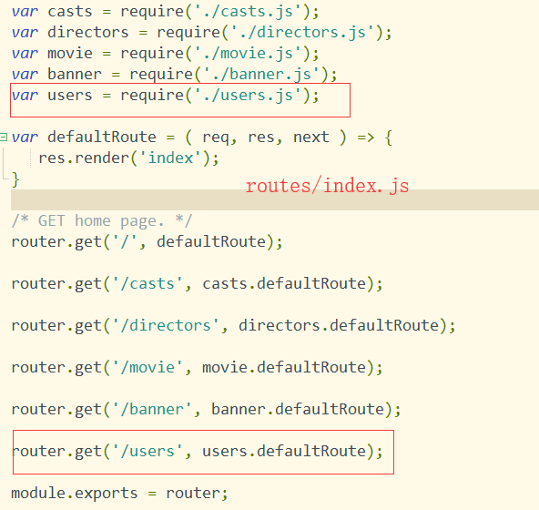

学习目标
完成豆瓣API中的电影top250后台项目制作
1、简化--模块化路由---routes/index.js

2、编写了模块，这几个模块是类似的


3、添加导演的数据
http://adminlte.la998.com/pages/tables/simple.html中选择一个表格模板，拿到源代码，将其放入dieectors.ejs
4、连接数据库操作
cnpm i async mongodb@2 -D
var async = require('async');
var { MongoClient } = require('mongodb');
module.exports = {
defaultRoute: ( req, res, next ) => {
async.waterfall( [
( cb ) => {
MongoClient.connect( mongourl, ( err, db ) => {
if ( err ) throw err;
cb( null, db );
})
},
( db, cb ) => {
db.collection('casts').find( {}, {} ).toArray( ( err, res ) => {
if ( err ) throw err;
cb( null, res );
})
}
], ( err, result ) => {
var len = result.length;
res.render('casts', {
result,
len
});
})
}
}
5、添加分页功能
编辑页面
<div class="pull-right">
<button class = "btn btn-xs btn-default" >首页</button>
<button class = "btn btn-xs btn-default" >上一页</button>
<input type="text" id="currentNum" value="1" />
/
<input type="text" disabled value="12"/>
<button class = "btn btn-xs btn-default" >下一页</button>
<button class = "btn btn-xs btn-default">尾页</button>
每页显示<select >
<option value = "5" selected>5</option>
<option value = "10">10</option> </select>个
</div>
配置分页路由，routes/index.js routes/casts.js
index.js

casts.js
var url = require('url');
var async = require('async');
var { MongoClient } = require('mongodb');
module.exports = {
defaultRoute: ( req, res, next ) => {
async.waterfall( [
( cb ) => {
MongoClient.connect( mongourl, ( err, db ) => {
if ( err ) throw err;
cb( null, db );
})
},
( db, cb ) => {
db.collection('casts').find( {}, {} ).toArray( ( err, res ) => {
if ( err ) throw err;
cb( null, res );
db.close();
})
}
], ( err, result ) => {
var len = result.length;
res.render('casts', {
result,
len
});
})
},
//分页路由
pagingRoute: ( req, res, next) => {
var { limitNum, skipNum } = url.parse( req.url, true ).query;
limitNum = limitNum * 1 || 5;
skipNum = skipNum * 1 || 0;
async.waterfall( [
( cb ) => {
MongoClient.connect( mongourl, ( err, db ) => {
if ( err ) throw err;
cb( null, db );
})
},
( db, cb ) => {
//mongodb 处理分页
// db.collection('casts').find( {}, {} ).limit( limitNum ).skip( limitNum * skipNum ).toArray( ( err, res ) => {
// if ( err ) throw err;
// cb( null, res );
// db.close();
// })
//js处理分页 - --
//拿到全部的数据，res
//求得全部数据的长度 listLen
//截取当前页面的数据 data res.splice() ---- 返回的是截取的数据
db.collection('casts').find( {}, {} ).toArray( ( err, res ) => {
if ( err ) throw err;
var listLen = res.length;
//从哪开始截取，截取多少个，对应的是mongodb中的limit()和skip()
var data = res.splice( limitNum * skipNum, limitNum );
cb( null, {
listLen,
data
})
db.close();
})
}
], ( err, result ) => {
/**
* var { listLen, data } = result;
listLen代表其这个数据库集合中所有数据的个数
data:当前页面所对应的数据列表
*/
var len = result.data.length; // 前端循环遍历数据的条件
var totalNum = Math.ceil( result.listLen / limitNum ); //总共有多少页数据
skipNum = skipNum + 1;
res.render('casts', {
result: result.data,
len,
totalNum,
skipNum,
limitNum
});
})
}
}
給前端分页部分添加路由
分页----首页功能
<button class = "btn btn-xs btn-default" onclick = "goFirstPage(<%= limitNum %>)">首页</button>
function goFirstPage(limitNum ){
window.location.href = '/castspaging?limitNum='+limitNum+'&skipNum=0';
}
分页---尾页
<button class = "btn btn-xs btn-default" onclick = "goLastPage(<%= totalNum %>, <%= limitNum %>)">尾页</button>
function goLastPage ( totalNum, limitNum ) {
// var limitNum = $("#limitNum").val();
var skipNum = totalNum - 1;
window.location.href = '/castspaging?limitNum='+limitNum+'&skipNum=' + skipNum;
}
分页---当前页
<input type="text" id="currentNum" value="<%= skipNum %>" onchange="goPage(<%= totalNum %>, <%= limitNum %>)"/>
function goPage ( totalNum, limitNum ) {
var val = $("#currentNum").val();
// var limitNum = $("#limitNum").val();
// alert(totalNum)
var skipNum = val - 1;
if ( val >= totalNum) {
$("#currentNum").val( totalNum );
skipNum = totalNum - 1;
}else if ( val <= 1) {
$("#currentNum").val( 1 );
skipNum = 0;
}
window.location.href = '/castspaging?limitNum='+limitNum+'&skipNum=' + skipNum;
}
分页--上一页
<button class = "btn btn-xs btn-default" onclick = "goPrevPage(<%= skipNum %>, <%= limitNum %>)">上一页</button>
function goPrevPage ( skipNum, limitNum ) {
// var limitNum = $("#limitNum").val();
// alert(skipNum)
var skipNum = skipNum;
if ( skipNum == 1) {
$("#currentNum").val( 1 );
skipNum = 0;
}else {
skipNum -= 2;
}
window.location.href = '/castspaging?limitNum='+limitNum+'&skipNum=' + skipNum;
}
分页---下一页
<button class = "btn btn-xs btn-default" onclick = "goNextPage(<%= skipNum %>, <%= totalNum %>, <%= limitNum %>)">下一页</button>
function goNextPage ( skipNum, totalNum, limitNum ) {
// var limitNum = $("#limitNum").val();
var skipNum = skipNum;
if ( skipNum == totalNum) {
$("#currentNum").val( totalNum );
skipNum = totalNum - 1;
}
// alert(skipNum)
window.location.href = '/castspaging?limitNum='+limitNum+'&skipNum=' + skipNum;
}
分页---选择每页个数
每页显示<select onchange = "changeLimit(<%= limitNum %>)" id = "limitNum">
<% if( limitNum == 5) { %>
<option value = "5" selected>5</option>
<option value = "10">10</option>
<% }else if ( limitNum == 10) { %>
<option value = "5" >5</option>
<option value = "10" selected>10</option>
<% } %>
</select>个
function changeLimit ( limitNum ) {
// alert( limitNum )
// alert( $("#limitNum").val() )
var limitNum = $("#limitNum").val();
window.location.href = '/castspaging?limitNum='+limitNum+'&skipNum=0';
}
解决别人图片不能显示问题：https://www.iteblog.com/archives/1929.html
<meta name="referrer" content="no-referrer">
数组的常用方法以及应用场景（es6数组的新增方法）